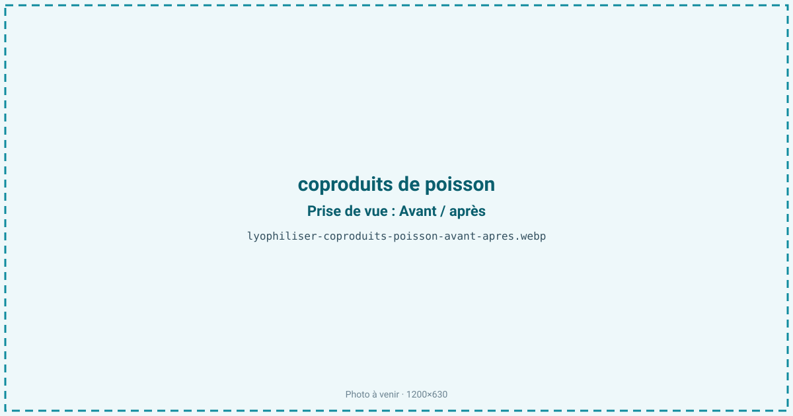
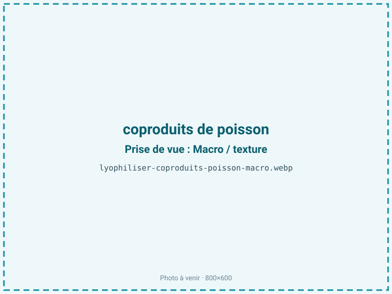
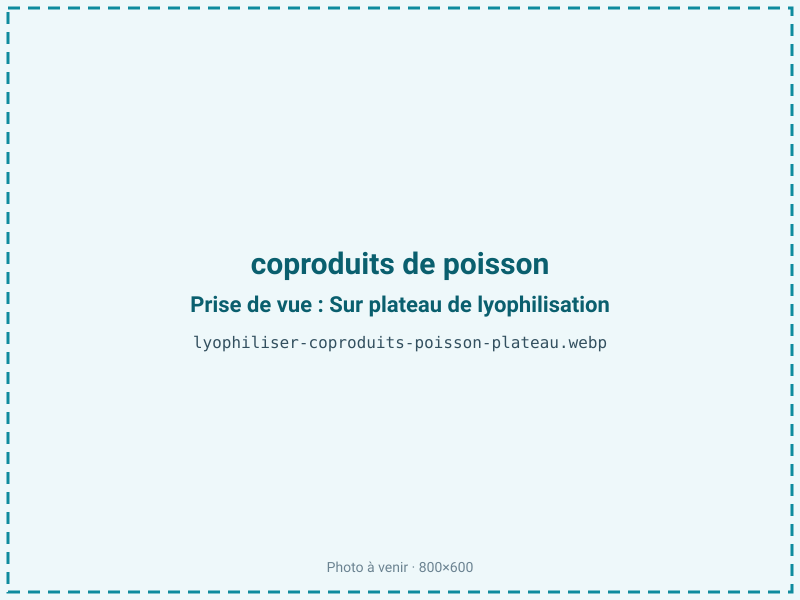
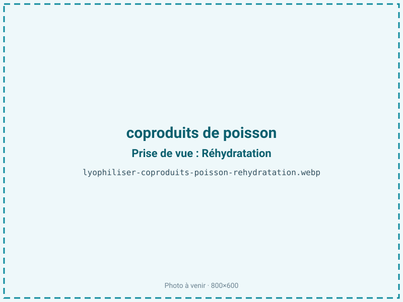

Lyophiliser des coproduits de poisson
Têtes, parures, arêtes et chutes de filetage représentent plus de la moitié du poisson et finissent souvent en déchet. La lyophilisation les valorise en une poudre riche en protéines, en oméga-3 et en minéraux, stable plusieurs mois, pour le petfood premium ou les bases de bouillon, en limitant l'oxydation des lipides marins que le froid protège mieux que tout séchage à chaud.

En bref
Comment coproduits de poisson se comporte à la lyophilisation
Les coproduits de poisson forment une matière hétérogène : muscle rouge et blanc, peau, arêtes, viscères éventuelles, soit un mélange de protéines, de collagène et d'une fraction lipidique supérieure à 10 %, très riche en acides gras oméga-3 (EPA, DHA) hautement insaturés. Cette matière titre environ 72 % d'eau et concentre du fer héminique et du cuivre, deux puissants catalyseurs d'oxydation.
À la congélation, l'hétérogénéité impose un broyage préalable pour homogénéiser la matrice et régulariser le front de sublimation ; à défaut, arêtes et parties grasses ne sèchent pas au même rythme. À la sublimation, l'eau part mais les lipides polyinsaturés se retrouvent exposés en surface d'une poudre à grande aire spécifique : c'est le point critique, car ces graisses rancissent très vite au contact de l'oxygène, d'autant que le fer les catalyse. L'oxyde de triméthylamine se dégrade par ailleurs en triméthylamine, responsable de l'odeur de poisson. Le froid du procédé limite ces réactions pendant le séchage, mais la protection se joue surtout au conditionnement.
Paramètres de cycle
Broyer les coproduits frais en une pâte homogène, puis congeler rapidement à −30 à −40 °C pour figer la matrice et limiter la migration des graisses. Étaler en couche fine et régulière de 4 à 8 mm : une couche épaisse et grasse ralentit fortement la sublimation et laisse un cœur humide. En primaire, une clayette de 20 à 25 °C convient ; le palier secondaire, allongé sur cette matière riche, homogénéise l'aw.
La cible se situe entre aw 0,30 et 0,50, et c'est ici essentiel : c'est un produit très gras (plus de 10 % de lipides). On ne sur-sèche surtout pas. En dessous d'aw 0,30, on retire la monocouche d'eau qui protège les lipides et le rancissement des oméga-3 s'emballe, on perd de la DLUO en dépensant du cycle. Le critère d'arrêt privilégie donc la stabilité oxydative à la sécheresse maximale, avec contrôle d'aw en fin de lot.
Pièges connus
- Très gras : oxydation rapide, barrière azotée + absorbeur indispensables.
- Ne pas sur-sécher : optimum de stabilité vers aw 0,30–0,50.



Variantes & provenance
L'espèce commande tout : des coproduits de saumon ou de maquereau, très gras, sont bien plus oxydables et plus lents à sécher que des parures de cabillaud ou de lieu, maigres. La part utilisée compte aussi — une matière dominée par les arêtes est plus minérale et sèche vite, tandis que les têtes et les chutes de ventre concentrent le gras et allongent le cycle. La fraîcheur de départ est déterminante : des coproduits déjà en début d'oxydation donneront une poudre au goût marqué, quel que soit le soin apporté ensuite. Selon le débouché, petfood ou alimentation humaine, le tri, le retrait des viscères et le niveau de traçabilité changent le protocole en amont.
Conservation & DLUO
Le facteur limitant est sans ambiguïté l'oxydation des lipides, exacerbée par le fer et le cuivre présents et par les plus de 10 % d'oméga-3 hautement insaturés. L'optimum de stabilité oxydative se situe entre aw 0,30 et 0,50 : en dessous de 0,30, on retire la monocouche d'eau protectrice et le rancissement s'accélère, sans gain de conservation. Le conditionnement barrière avec inertage azote et absorbeur d'oxygène n'est pas optionnel mais indispensable. Comptez 5 à 9 mois en sachet simple, et 12 à 18 mois en barrière azotée ; à titre de repère, une poudre de saumon tient environ 155 jours en emballage PLA à 20 °C, ce qui montre le poids du matériau d'emballage. Un stockage au frais prolonge nettement la DLUO, la vitesse d'oxydation doublant à peu près tous les 10 °C, et une barrière opaque protège de la lumière qui accélère elle aussi le rancissement.
5 à 9 mois en sachet, 12 à 18 mois en barrière azotée (repère saumon : ~155 j en PLA à 20 °C).
Estimez selon votre emballage :
Face aux autres procédés de séchage
Les coproduits de poisson sont classiquement transformés en farine par cuisson-pressage-séchage à chaud : le procédé est économique mais oxyde fortement les oméga-3 et donne l'odeur rance typique de la farine de poisson. Le séchage à l'air aboutit au même résultat sur une matière aussi grasse. Le micro-ondes sous vide limite la chaleur mais reste inférieur au froid pour préserver des acides gras aussi fragiles. La lyophilisation conserve un profil oméga-3 intact et une poudre au goût plus net, ce qui la réserve aux débouchés à valeur ajoutée — petfood premium, nutraceutique, bases de bouillon — où le surcoût se justifie face à la farine standard.
Marchés & applications
La poudre de coproduits lyophilisée vise d'abord le petfood premium et les friandises pour animaux, très appétentes et riches en oméga-3, puis les bases de bouillon et fumets concentrés, et la nutraceutique (compléments d'huiles marines protégées). Les clients types sont les fabricants d'aliments pour animaux haut de gamme, les industriels du bouillon et les acteurs de l'économie circulaire qui valorisent les coproduits de la filière pêche et aquaculture plutôt que de les envoyer en farine à bas prix.
- Poudre riche en oméga-3
- Base de bouillon
- Petfood premium
Questions fréquentes — coproduits de poisson
Quels coproduits peut-on lyophiliser ?
Têtes, arêtes, parures, peaux et chutes de filetage. Les viscères sont possibles pour le petfood mais demandent un tri et une traçabilité renforcés.
Pourquoi une barrière azotée est-elle indispensable ?
Parce que la matière dépasse 10 % de lipides oméga-3, très oxydables et catalysés par le fer. Sans azote ni absorbeur d'oxygène, la poudre rancit en quelques semaines.
Faut-il broyer avant ?
Oui : le broyage homogénéise une matière très hétérogène (chair, gras, os) et régularise le séchage. Sans lui, arêtes et parties grasses ne sèchent pas au même rythme.
Quelle durée de conservation ?
5 à 9 mois en sachet simple, 12 à 18 mois en barrière azotée. Un repère : une poudre de saumon tient environ 155 jours en PLA à 20 °C.
Pourquoi ne pas descendre l'aw plus bas ?
Parce qu'en dessous d'aw 0,30 on retire la monocouche d'eau qui protège les lipides, ce qui accélère le rancissement. L'optimum est 0,30-0,50.
Est-ce utilisable en alimentation humaine ?
Oui pour des coproduits triés, frais et tracés (bouillons, nutraceutique). Le petfood accepte un cahier des charges plus large.
Quel est le rendement ?
Environ 4:1, plus favorable que pour un poisson entier car les coproduits sont moins riches en eau (72 %) et plus concentrés en matière sèche.
Prochaine étape : envoyez-nous 200 g
Vous avez les repères des coproduits de poisson. La suite logique : nous envoyer un échantillon et repartir avec une fiche technique sur votre produit — rendement, aw finale, coût au kilo.
Tester des coproduits de poisson — 250 à 500 €Déductible de votre premier lot.